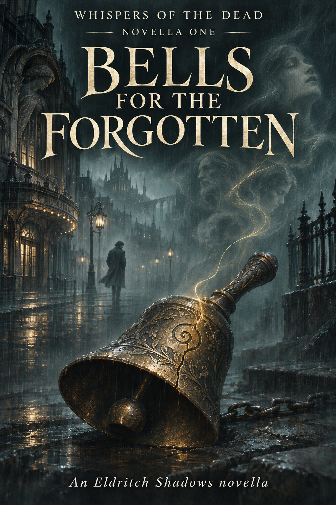

Whispers of the Dead · Novella One
Bells for the Forgotten
A story set in the Eldritch Shadows universe
In Mournhaven, the dead still have something to say.
Detective Gabriel Thaner hears the dead. When a killer begins silencing them, he and his partner Mara Thorne follow a trail of old murders, engraved bells, and forgotten rituals.
PDF · 32 pages · 7.5 MB · Includes front and back covers
Chapters
1. First Watch
Gabriel Thaner looked nothing like a cop, and Mournhaven noticed.
Rain streaked the homicide division’s windows. He stood between desks crowded with old coffee and damp paperwork, his transfer tag still pinned to his coat. Light brown hair brushed his shoulders. His beard was neatly kept, his shirt open at the neck. Two chains rested against the pale blue fabric, one fine and silver, the other a length of dark, worn links.
He might have belonged in a university library. Here, beneath the fluorescent lights, even the way he waited seemed suspicious.
The woman at the far desk looked up from her keyboard. Early forties. Sharp eyes. One hand wrapped around a coffee cup as though someone might try to take it.
“Thaner.”
“Detective Thorne.”
She indicated the chair opposite. “Sit. Speak when you’ve got something to say. I don’t do handholding or coffee runs. Screw up my scene notes and I’ll file you under Missing Persons myself.”
“Understood.”
Mara Thorne studied him a little longer. “Grayridge, right?”
“Originally.”
“Cold little foghole out east. Too quiet for the living. Too loud for the dead.”
He paused. Her eyes sharpened.
“Bit dramatic,” he said.
“Mournhaven eats quiet boys alive, Thaner. I hope you’ve got teeth.”
Before he could answer, a grizzled sergeant dropped a folder on her desk.
“Bell case. Number three.”
Thorne opened it. Her expression changed at the second photograph.
“Theater district. Janitor found her posed onstage.” She pushed the folder toward Gabriel. “You read crime scene reports?”
He looked down. A woman in a faded costume robe. Bruising at the throat. A bell between her lips. Beneath the clinical notes, one detail arrested him. Her tongue had been removed.
“I do.”
Thorne leaned back. “Then tell me why someone does that. Cuts out her tongue, puts a bell in her mouth, arranges her for an audience.”
Gabriel’s jaw tightened.
“To stop her from speaking.”
“To whom?”
He kept his eyes on the photograph.
“Someone who listens.”
2. Stage of Silence
By late morning, the rain had thinned to mist. Dunsmore Theater stood at the end of Lark Street, its marquee missing enough letters to make a different name. The city had withdrawn its arts funding years ago. Weather had done the rest.
Thorne ducked beneath the police tape. Thaner followed without speaking.
She glanced back. His hair was damp, his expression composed. New transfers usually asked questions. They wanted to seem useful. He seemed content to watch, which left her wondering what he saw.
Inside, the lobby smelled of wet carpet and dust. An officer directed them past the forensic team toward the auditorium.
“Liora Vass,” Thorne said. “Twenty-eight. Assistant costumer. Missing four days.”
“Does the building still have power?”
“No. Scene crew brought a generator.”
A single work light illuminated the stage. Liora lay beneath it, knees tucked, hands folded in her lap, head tilted back. Someone had dressed her carefully. The bell sat in her open mouth as though she had been asked to sing and given this instead.
Thorne crouched at the edge of the platform.
“Same engravings. That spiral again.”
Thaner’s gaze rested just above the body.
“You freeze up around corpses?” she asked.
“No.”
“Then walk me through it.”
He stopped outside the pool of light. “Posed after death. Cleaned. There’s bruising at the throat, but very little blood here. He wanted her found.”
“And the bell?”
“Part of the message.”
She waited. He offered nothing more.
“You’re going to make me work for every sentence, aren’t you?”
She went to speak with a scene technician. Behind her, Gabriel took one step closer to Liora.
The air above the body chilled his face. His fingers moved toward the dark chain, then stopped. Across the stage, a technician was looking in his direction.
The bell trembled between Liora’s lips. Barely a movement. No sound.
Inside Gabriel’s head, a voice stirred.
Don’t let it silence me.
3. Echoes in the Wings
Gabriel returned after midnight. The police tape stirred against the theater’s side door, and the key he should not have possessed caught briefly in the lock.
He waited until the street was empty before slipping inside.
Forensics had taken Liora to the morgue and switched off the work lights. Gabriel crossed the dark auditorium by touch and memory. Onstage, he knelt where her body had been.
Something remained. It usually did.
He drew the heavier chain from beneath his shirt and wrapped its cold links around his hand.
“You don’t need to speak,” he whispered. “Remember. I’ll listen.”
The curtains shifted. He felt the theater gathering around him, generations of expectation caught in wood and velvet. Applause. A man’s laughter. The shame of forgetting a line. Beneath those familiar traces lay something new and frightened.
“Liora Vass. If you’re here, I hear you.”
Three faint tolls sounded somewhere beyond the walls.
Her presence tightened. He could feel her trying to answer, but the effort only drew the binding closer.
Another voice reached him.
“I watched him place it.”
Gabriel held still.
“The bell?”
“For us. For those who listen. He knows about us.”
“Who is he?”
The reply came in broken impressions. Gloved hands. A man leaning close to a mouth that could no longer speak.
“He hears the echoes. He silences us so he can command.”
Gabriel tightened his grip on the chain. The papers called the killer the Bellmaker. He had assumed the bells concealed or mocked a ritual. Now he understood they helped perform it.
“Can you show me where he stood?”
Cold moved across the auditorium. A seat in Row E folded down, center-left.
He found it without a light. The upholstery held a bitter chemical smell, too recent for the rest of the room.
“Thank you.”
A click sounded above him.
Gabriel looked toward the catwalk. He could distinguish the rails against a high window, but nothing moved between them.
He waited until the seat folded shut before leaving.
4. Rituals of the Living
Hollow Roast was warm enough to mist the windows. Houseplants crowded its shelves, thriving through some private arrangement with a city that rarely saw the sun.
Gabriel took the corner table, back to the wall, and wrapped both hands around his mug. Ichor black. No cream or sugar. Thick, bitter coffee that left warmth behind long after the taste had gone.
His breakfast changed every day. This morning brought duck and mushroom dumplings glazed with sweet soy, a runny fried egg over pickled root hash, and plum-braised kelp. He tried the kelp first.
Nia passed with the coffee pot. Ink stained two of her fingers.
“Another cup?”
He tapped the rim. “Always.”
“Most people take one sip and ask if it’s meant for crows.”
“It’s supposed to taste like soil and fire.”
“That’s what you said last time.”
“And it was good last time.”
She filled his mug, shaking her head.
Outside, faces drifted past the glass. People going to work, carrying shopping bags, pulling children along by the hand. He watched until the egg began to cool, then turned his attention back to the plate.
The dead remembered meals. Sometimes they remembered them with a precision he found unbearable. His mother’s kitchen. A particular loaf of bread. The taste of an orange peeled in a country that no longer existed.
He could still discover something new at breakfast. He meant to keep doing it.
His phone buzzed twice.
Got something on the bell engravings. Meet me in records.
Thorne had sent no greeting. He finished the last dumpling and drained his cup.
“Leaving already?” Nia asked.
“Work.”
“Try to do something cheerful.”
He looked at the empty plate. “I have.”
5. Paper Dust and Dead Ends
Thorne had a cart waiting in Sub-Basement Two. Files lay open beside a thermos, their yellowed pages weighted with evidence photographs.
“Glad you’re awake.”
“I was awake. Just elsewhere.”
“You always talk like you’re quoting yourself.”
She slid a folder across the cart.
“Five older cases. Fourteen years between the earliest and the latest. Similar bells, same placement. Tongues removed in three. Nobody linked them.”
Gabriel turned to a photograph of a body in an old printing works.
“They closed this one?”
“Confession. Man couldn’t explain the bell, though. Said it was already there when he arrived.”
Beneath a smear of blood, Gabriel found the edge of a painted glyph. He bent over it.
“You recognize something?”
“Possibly.”
Thorne leaned against a cabinet. “Then help me out.”
“Do you believe rituals can work?”
“I believe people think they do. Usually that gets us goat blood and bad Latin.”
He traced the shape without touching the paper. “The marks are becoming more precise. So are the wounds. Someone’s testing a method.”
“For what?”
He looked at the victim’s face. “How much can be taken away before someone stops answering.”
Thorne was quiet for a moment. Then she reached into a box on the cart.
“The seat you called in from the theater. We got no useful prints. It had been cleaned with a solvent.”
She held up a sealed bag. A curved metal shaving rested inside.
“This was underneath. Could be part of a bell.”
Gabriel took the bag by its edge. The chain beneath his shirt seemed to pull against his neck.
“I’m going to the morgue,” she said. “Vale wants us to see the cuts. Says the angles are getting cleaner.”
He glanced at the old glyph again.
“I need a little time with this first.”
“Fine. I’ll meet you there.” She stopped in the doorway. “And Thaner? When you find something, use whole sentences.”
6. The Listening Room
His flat occupied the third floor of a converted tenement above a closed apothecary. The radiator knocked inside the wall, and the windows admitted enough wind to move loose papers on the desk.
Gabriel put his coat on a chair and carried his copy of the photograph to the rug in the corner.
He called it the Listening Room. There was scarcely room for the name. An iron desk, a chalk circle, a handful of objects placed within it. A stone worn smooth by water. A rusted gear. A crow feather. Grave rosemary, dry enough to crumble.
He wrapped the Chain of Iron Memory around his palm and laid the photograph at the circle’s center.
He wanted the hand that had drawn the glyph. Only the hand. He had learned to be particular about what he asked to remember.
The links cooled against his skin.
A gloved hand held a paintbrush. Oil and metal shavings scented the air. Machinery hummed beyond a wall.
“We bind to hold,” a man said. “Speak only when we command.”
Gabriel opened his eyes. His breath hung over the photograph.
The glyph was a control mechanism. Its maker had layered instructions into it, refining each line until a spirit’s resistance became another part of the design.
He stood, unwinding the chain. He had let too much of that recognition show in the archives.
“You’re getting reckless.”
The empty room offered no argument. Thorne would keep watching him. Eventually she would ask a question he could not evade, and some exhausted part of him was already looking forward to it.
He went to the sink and splashed water on his face.
In the cracked mirror, he looked like a man who had missed a night’s sleep. That was almost comforting.
His phone lit up on the desk.
Morgue’s waiting. Hope you like formaldehyde.
He dried his hands, put the photograph away, and went to meet her.
7. Cold Witnesses
The morgue corridor smelled of bleach and cold metal. Gabriel swiped through the door just before Thorne arrived with her thermos.
“You look better.”
“I had dumplings.”
She regarded him over the lid. “Mournhaven’s going to break you.”
“It’s making an effort.”
Dr. Anton Vale waited beside the autopsy table. Thin, impatient, already gloved.
“You’re late.”
“We’re here,” Thorne said. “Show us.”
He drew back the cloth covering Liora’s throat. Gabriel made himself look at the incisions before he listened for anything else.
“Smoother than the previous wounds,” Vale said. “There are puncture marks beneath the skin. I suspect an injected drug, though we’re waiting on toxicology. Some of the work was done before death.”
Thorne’s grip tightened on her thermos.
“She was conscious?”
“I can’t tell you that yet.”
At the edge of Gabriel’s hearing, words struggled through static.
He watched. He wrote.
He kept his hands at his sides. The binding tightened whenever Liora tried to reach him. Forcing her to answer would hurt her further.
“Was there residue on the bell?” he asked.
“Ash and powdered copper. Ground into the engraving.”
“Part of the ritual?” Thorne asked.
“You tell me.” Vale indicated the evidence tray, where the metal shaving from the theater lay inside its bag.
Gabriel examined it through the plastic. The curve followed the same pattern as the glyph in the photograph.
“He’s making them to a design,” he said. “Changing it as he goes.”
“So we find someone who can make bells,” Thorne said.
“And someone who needs them.”
She looked up at him. He could feel the question coming, but Vale interrupted with the first toxicology notes.
On their way out, Gabriel glanced back at the table.
Liora’s presence had drawn inward. Something else seemed to occupy the space around it, patient and cold, attending to the same conversation he had.
He closed the door carefully.
8. The Dead Don’t Retire
“Hell of a mess you’re swimming in, kid.”
The voice came from the armchair by Gabriel’s window. Vincent Rike sat with his coat open and a cigarette between two fingers. Its ember produced no light.
Twelve years dead, and he still wore the badge they had buried him with.
Gabriel set down his bag. “You’re early.”
“You left the chain open. I could smell the ritual a block away.”
“I was working.”
“That’s generally when you get into trouble.”
Gabriel poured a glass of water and sat on the bed.
“The glyphs are layered. Whoever’s using them knows how to hold a spirit and make it respond.”
Rike took a drag. The suggestion of smoke collected around his head.
“Recruiting?”
“Enslaving.”
The old detective’s face hardened.
“I need to break the bindings,” Gabriel said. “Before I can do that, I need to understand where they began.”
“You want me to go hunting.”
“The older victims. Anyone who remembers the ritual work. Places the dead avoid.”
Rike rose, his shape thinning where the lamplight caught it. “You always ask for the fun jobs.”
“You complain about having nothing to do.”
“I complain about being dead. There’s a distinction.”
Gabriel almost smiled. Then he thought of Liora, struggling to form a single word.
“Vin. If he can do this without a body, he won’t have to kill anyone else.”
“He’ll collect whoever’s already here.”
Gabriel nodded.
Rike stood at the door, already fading through it.
“Find out how to break the chain. I’ll find the bastard holding it.”
“Don’t let him see you.”
The ghost looked back. “What kind of detective do you think I am?”
He disappeared, leaving the faint smell of bourbon and gunpowder.
9. Something Still Warm
The lanterns above Tamarind Smoke burned orange through the evening fog. Thorne followed Gabriel past a rusted sign and into a room scented with spice and hot oil.
“Smells like a haunted kitchen.”
“Wait until you try the food.”
He took a booth at the back. A server brought two cups without asking for an order.
“How often do you come here?”
“Often enough.”
Soon the table held stews, charred flatbread, pickled roots, and a small plate of deep-fried insects dressed with herbs and citrus. Gabriel pushed the plate toward her.
She stared at it. “You trying to kill me?”
“You have access to my personnel file. I’d never risk it.”
“You first.”
He ate one. She waited for evidence of distress, then picked up another and bit into it.
The crunch was audible.
“Damn it.” She reached for a second. “That’s good.”
Gabriel looked pleased enough that she almost laughed.
They ate for a while before she returned to the case.
“The older murders. Practice?”
“I think so. The sigils are more precise now. Tongue removal used to vary. Now it’s consistent.”
“A ritual he’s learning?”
“Or improving.”
“We still don’t have a name.”
“No.”
She tore a piece of bread and watched him finish his stew. At the precinct, he treated each word as a potential mistake. Here, he asked the server about an ingredient, listened to the answer, and thanked her with unguarded enthusiasm.
“For someone who walks around like a haunted cathedral,” Thorne said, “you’re a joyful eater.”
He glanced down at his plate. “The living should enjoy what they can.”
“Grayridge proverb?”
“My own advice. I’m trying to follow it.”
When the dishes were cleared, she leaned back.
“Keep feeding me like this and I might start trusting you.”
He raised his cup. “That sounds dangerous.”
“Probably is.”
For the rest of the meal, she let him talk about the food.
10. The Ones Left Behind
The Vasses lived in a squat block in Westhill Flats. Flowerpots clung to the windowsills, and cooking oil scented the stairwell.
“Let me lead,” Thorne said outside their door.
Gabriel nodded.
Mrs. Vass wore a cardigan too thin for the weather. Her husband stood behind her with his arms crossed, pressing them hard against his chest.
They invited the detectives into a living room scrubbed so thoroughly that the air stung. Photographs filled the shelves. Liora at birthdays. Liora backstage. Liora with a rabbit asleep in her lap.
“Did she mention anyone who made her uncomfortable?” Thorne asked.
“No,” Mr. Vass said. “She’d started a costume job. She was excited about it.”
“Any trouble at work?”
“People loved her,” his wife said.
Gabriel looked toward an empty hutch in the corner. Its door stood open. Feed lay untouched in a ceramic bowl.
For a moment, a different morning occupied the room. Someone singing at the stove. Soft claws skittering over the floor.
“She let it out while she made breakfast,” he said. “She said it liked the singing.”
Mrs. Vass lifted her face.
“Yes. She always said that.”
Thorne turned to him.
The borrowed morning vanished.
“How did you know?” she asked.
He looked at the photograph on the shelf. An answer offered itself, inadequate and ugly.
“I guessed. She looked like someone who talked to animals.”
Thorne held his gaze, then returned to the parents.
At the door, Mrs. Vass hugged him before he could step aside.
“You talk like you knew her.”
“I’m trying to.”
Outside, Thorne lit a cigarette. She waited until they were clear of the windows.
“You’ve got eyes in places you shouldn’t, Thaner.”
He said nothing.
“I let that pass for their sake. Next time you know something you can’t possibly know, give me a better answer.”
“Understood.”
She walked ahead. He followed, carrying the memory of Liora singing and the shame of having used it to lie.
11. Grave Debt
Hollowpine Cemetery occupied a piece of the North Ward that the city had never managed to reclaim. Roots lifted the paths. Moss filled the lettering on the stones, and crows nested in the arms of an angel above the gate.
Gabriel found his teacher’s grave just after midnight.
ELIAS DANE
Teacher, Binder, Watcher of Doors
1904–1991
He had learned from Elias long after those dates had been carved. Even now, he sometimes wished they had met while they were both alive.
He took off his gloves, knelt, and laid his palms against the stone.
“You taught me to open the door. I need you to walk through it.”
The air thickened. Gabriel closed his eyes and let his breathing slow. He felt another hand settle inside his own, testing the joints.
When he rose, his back straightened with a familiarity that made his throat ache.
“You’ve let yourself get thin, boy.”
“I eat plenty.”
“You listen too much.”
Elias’s voice used Gabriel’s mouth roughly. Possession always left him sore, but he had agreed to this. He could close the door when he needed to. Elias had insisted on teaching him that first.
Together, they knelt. His borrowed hand drew the binding glyph in the dirt.
“I know this mark,” Elias said. “Taught it to a High Cantor in ’53. He misused it and got eaten by a mirror.”
“Someone’s improved it.”
The hand stopped.
Gabriel felt his teacher examine the layers, following each instruction into the next.
“He’s compressing them,” Elias said. “Making a soul small enough to fit a command. Repeat the hurt. Remove the name. Eventually all that answers is what he permits.”
“Can it be undone?”
“Yes. Carefully.”
Relief moved through Gabriel too quickly. Elias tightened his borrowed fingers against the earth.
“Listen to me. You can break a binding and lose what’s inside it. You’ll need to give the pieces somewhere to return.”
A rusty creak came from the graves beyond them.
Elias turned Gabriel’s head. Something displaced the mist between two stones.
“We’ll work elsewhere.”
“The Bellmaker?”
“Something drawn to him. Keep your door closed until I call.”
The presence inside Gabriel withdrew. He caught himself against the headstone, coughing into his sleeve.
One last warning lingered in his own voice.
“Don’t let him ring a bell in your name.”
12. The Pour and the Fog
The following evening, Gabriel found Thorne at the Pale Lantern. She had a short glass before her and her coat on the neighboring stool. An old jazz record turned behind the bar.
“This is funny,” he said.
She rolled her eyes before looking up. “Thaner. Do you always follow your partners home?”
“This is my bar.”
“It’s everyone’s bar. That’s the arrangement.”
He waited until she moved her coat, then sat.
“Ryou. Good evening. Is there any Tsuru left?”
The bartender nodded toward a bottle high on the shelf. “Small pour?”
“Generous.”
Thorne looked at him. “Expensive taste for a detective.”
“I don’t order it every night.”
“Just when you find your partner drinking alone?”
“Is that what we’re doing?”
She glanced at his empty place on the bar. “Apparently not anymore.”
Ryou brought the whisky. Gabriel held it beneath his nose before tasting it. Pear, smoke, a warmth that took its time.
Thorne finally drank from her own glass.
“You always this calm after talking to grieving parents?”
He lowered the whisky.
“No.”
The record reached its end. Ryou lifted the needle and turned it over. For a while, neither detective spoke.
“What’s his next move?” she asked eventually.
“He needs somewhere to work. Somewhere he knows well.”
“You sound certain.”
“The bells take time. So do the marks.”
She studied him, deciding whether to ask more. He had made her do that too often already.
“I’ll find something you can use,” he said.
“Find something we can prove.”
He raised his glass a little. She touched hers against it.
Outside, drizzle gathered on the window. Across the city, in a room neither of them had found, a man polished another bell.
13. Grave Intel
Rike was waiting when Gabriel returned. The ghost had taken his usual chair, but there was no cigarette in his hand.
Gabriel stopped with his keys still in the lock.
“What did you find?”
“Greystone Row. Number forty-one.”
He closed the door.
“There’s nothing there.”
“There was. Burned fifteen years ago. They call it the echo house.”
Rike leaned forward. For a moment, his face lost its human proportions, drawn thin by whatever he had brought back with him.
“Three of the old victims are caught there. Same memories, over and over. Someone’s been maintaining the loop.”
“The Bellmaker?”
“They call him the Binding Hand. They wouldn’t say much else.”
“Couldn’t?”
“Both, I think.”
Gabriel spread a district map on the kitchen table and marked the address.
“His workshop?”
“Maybe his first. He’s left too much of himself there for it to be somewhere he passed through.”
Gabriel looked from the mark to the case notes beside it. He had promised Thorne evidence. All he had was the word of a man whose death certificate had been on file for twelve years.
“I hate doing this.”
“Research?”
“Deciding how much truth she’s allowed.”
Rike settled back. “Then stop deciding that. Start with the address. Houses burn. Someone writes it down.”
Gabriel found a clean page and noted the fire records, property transfers, and old murder locations he needed to compare.
“And when she asks where I got the address?”
“An old detective gave you a lead.”
“She’ll want to meet him.”
Rike glanced down at himself. “Tell her I’m difficult to reach.”
Gabriel laughed once, despite himself. By the time he looked up from the notebook, the chair was empty.
14. A Small Crossing
Before dawn, Gabriel went south in a thick sweater, leaving his damp coat over the radiator. A folded note in his pocket held an address and a name.
Lina Mercier. Seven years old. Pneumonia.
No investigation awaited him here. No murderer. A child had died, and part of her had stayed behind.
He entered a courtyard through a gap in the fence. The tiles were cracked. A swing hung crooked from its frame.
Lina stood beside it in a faded pink nightgown, holding a stuffed fox with one ear missing.
“You’re not the first one who’s tried,” she said.
Gabriel knelt far enough away to give her room.
“What would help?”
She pressed her face briefly against the fox’s head.
“They keep crying.”
He drew a piece of paper and a black pencil from his satchel.
“Would you like to leave them something?”
She looked at her hands. He laid the paper on the tiles and rested his fingertips against one corner, making a small place where her memory could touch the morning.
The pencil moved slowly. Gabriel kept his eyes on the fence and let her have the words to herself. Grave rosemary smoldered beside his knee. Beyond the courtyard, the mist began to lift.
When she finished, he folded the paper.
“Will they know it’s from me?”
“I think so.”
“Will it make them hurt less?”
He took a moment before answering.
“They’ll still miss you. But they’ll have this.”
She nodded. Her grip loosened around the fox, and the courtyard was empty.
Minutes later, Gabriel stood outside the Mercier apartment. He read the note once before sliding it through the mail slot.
I love you. You’re the best mom and dad. I’m not scared anymore. Tell Mr. Fox he can sleep now.
An uneven heart filled the bottom of the page.
Inside, someone stirred. A floorboard creaked, followed by the quiet sounds of a household beginning another difficult day.
Gabriel left before they opened the door.
15. Threading the Needle
By the time rain began tapping on the precinct skylights, Gabriel had found the fire report.
November third, fifteen years earlier. Forty-one Greystone Row. Registered owner, Tomas Rell. The first report listed no casualties. A later coroner’s note recorded a charred body recovered from the crawlspace, never formally identified.
The authorities had presumed it was Rell. The house was demolished three years afterward, and the lot had stood empty ever since.
Gabriel compared the address with the older murders. Three victims had been found within half a kilometer of the property. Different dates, different recorded methods. Similar bells.
He checked the tax rolls. Rell had bought the house two years before the fire and paid in cash. A university directory listed him as a lecturer in pre-industrial religious symbology.
The seller’s name brought Gabriel upright.
Father Orlan Vey.
He pulled the oldest case file toward him. A victim’s journal had been copied into an appendix, its last pages crowded with references to a binding circle run by “O.V.” He had passed over the initials before. Now they occupied the center of the page.
He copied the property transfer reference, the directory entry, and the journal extract. Beside each, he wrote the source Thorne could check.
There was no need to invent the connection. Rike had given him a place to look. The living had kept the rest, buried in their own records.
He assembled the pages into a folder and wrote GREYSTONE ROW across its cover.
For the first time that morning, he felt he had something he could hand her without flinching.
“Thanks, Vin.”
A cabinet door clicked shut at the far end of the room.
16. A Bell Before Silence
Eva Keene left the bookshop near closing time. Steam drifted from the last food carts in the market. Above her, someone had opened a window to let out the heat, spilling music into the street.
She took the lane beside the old bakery. It was shorter, and she wanted to get home before the rain.
A man stood by the gate ahead.
“Miss Keene?”
She stopped. He held a small hand mirror, antique silver around cracked glass.
“You left this.”
“That’s not mine.”
“The stall yesterday. You asked the price.”
She had. She remembered the mirror, and the woman who had laughed when Eva tried bargaining for it.
“I know the owner,” he said. “She asked me to catch you. She’ll take your offer.”
He held it out by the handle. Eva reached for it. His fingers touched hers, cold enough that she almost dropped it.
Something tightened behind her ears.
“There are others downstairs,” he said. “You might prefer one that isn’t damaged.”
Eva looked toward the market. The music had grown distant. She meant to say she was in a hurry, but he was already opening the gate, and following him seemed easier than forming the words.
She knew that was wrong.
Her hand closed around the mirror. She tried to stop walking. Her foot found the next step anyway.
The basement smelled of books and candle wax. He shut the door behind her.
“Sit down, please.”
Eva tried to shout. Nothing came out.
The man took a small bell from the table and checked its engraving beneath a lamp.
Far above them, a clock struck the hour. Eva could feel each blow through the ceiling, but she could no longer hear the market.
17. Not Fast Enough
The next morning, Gabriel was rehearsing the Greystone explanation when dispatch called.
He listened with his coffee cooling in his hand.
Eva Keene. Alley off Gloam and Third. Thorne was already on her way.
He put down the mug, pushed the folder into his coat, and checked the chain at his throat.
At the scene, a tarp sheltered the body from the rain. Thorne stood beside it with a gloved hand resting against her mouth.
She lowered it as he approached.
“Bookshop clerk. Twenty-six.”
Eva lay beside a rusted drain, hands folded, a polished bell between her lips. The forensic team had lifted an old rug from the paving. Beneath it, a glyph remained dry and sharply drawn.
Gabriel crouched at the edge of the tarp. Fear pressed against him before he could reach for her. Something had pursued her beyond death and was still holding on.
Near her hand, an evidence marker stood beside a cracked silver mirror.
“The cuts are cleaner,” Thorne said.
He looked at the glyph. A line that had wavered in the old printing works photograph now met the next with exact precision.
“So is this.”
“You said you had a lead.”
He took out the folder. The copied records had seemed substantial at his kitchen table. Here, they felt like an account of how long he had taken.
“Greystone Row. I found a connection between three of the old cases and a house that burned down.”
Thorne accepted it and opened the cover.
“Tell me while we walk.”
Gabriel rose. Before he turned away, he tried once more to find Eva through the binding.
Only fear answered.
18. The House That Echoes
Lot forty-one lay at the end of Greystone Row behind a fence bent outward by weeds. Blackened foundation stones broke through the earth. The neighboring buildings leaned over it as though trying to see what had happened.
Thorne stood at the gate with Gabriel’s folder open.
“A lecturer, a house fire, a priest, and three dead people. I’ll give you this. You’ve brought paperwork.”
“There’s more here.”
“Then show me.”
He walked the perimeter slowly. The surviving rooms were difficult to distinguish, but he felt where people had waited and where they had struggled. Near the back wall, the grass grew thin over a patch of scorched tile.
He knelt and brushed aside loose soil with a gloved hand.
Chalk lay inside the tile grooves, too fresh to have survived fifteen years. Between two stones, he found a piece of melted bell metal.
Thorne crouched beside him.
“Someone’s still coming here.”
He handed her the fragment. She bagged it, then photographed the marks.
“Rell started it?”
“Possibly. Someone kept it going after the fire.”
She looked across the empty lot.
“You believe in the ghosts, don’t you?”
Gabriel stayed where he was.
“Does that change what we found?”
“It changes how I listen to you.”
A voice broke across his concentration.
He practiced here. With us.
For an instant, the foundation held walls again. Ink stained the floor. Someone was screaming in a room with no door.
Gabriel stood too quickly.
“Thaner?”
He took a breath, then another. “We need a forensic survey. Check beneath the floor. The basement may still be intact.”
She watched him recover. He could see her storing it beside the other things he had failed to explain.
Then she reached for her phone.
“Fine. Let’s turn the earth.”
As they left, a chime sounded beneath the ruined tiles. Gabriel kept walking. It took effort.
19. The Ink Beneath the Ash
At the university, a nervous archive assistant named Julian led them through the Department of Religion and Occult Studies.
Thorne looked up at the stained ceiling.
“Place gives me hives.”
“That’s the academic ego in the walls,” Gabriel said.
Julian gave an uncertain laugh. Neither detective had been speaking to him.
He unlocked an archive room and placed a slim folder on the table.
“Lecture notes. A disciplinary report. Some material recovered after the fire. There isn’t much.”
“We’ll start there,” Thorne said.
Julian left them alone.
Rell had taught comparative ritual structures. A complaint accused him of manipulating students during private study sessions. The investigation had ended with his presumed death.
At the back, Gabriel found a scorched journal page.
Only through repetition does the soul fracture willingly. Pain is noise. Silence is purity. Command follows collapse. The tongue is the first gate.
Thorne read it over his shoulder.
“That enough doctrine for you?”
He thought of Liora forcing words through a binding that punished every attempt.
“More than enough.”
Beneath the page lay an attendance sheet for a lecture on obedience and symbolic geometry. Orlan Vey’s name had been underlined twice. A group photograph was clipped to the same sheet, the participants identified in Rell’s small handwriting.
“He owned the house before Rell,” Thorne said. “Then attended his lectures.”
“They were working together.”
“Or one was learning from the other.”
She photographed the page and the faces, then called the precinct to request Vey’s current address.
Gabriel looked again at the scorched journal. They had found the method’s beginning. Somewhere in the city, its latest version was being prepared.
On the way out, Thorne touched the folder beneath his arm.
“Good work on the records.”
He met her eyes. For once, he could accept it.
Behind them, a book moved on a shelf. Gabriel felt the warning before the voice reached him.
The gate opens soon.
20. The Watcher Beneath the Veil
Vey stood beside an eroded saint in the university courtyard and watched the detectives descend the steps.
He had come to see which records they took. The woman carried copies now, speaking into her phone. The younger man waited beside her, pale and quiet, deferring whenever she spoke.
Thorne. He knew the name from the case reports.
She had found Greystone. She had followed Rell’s work into the archives. The other officers had photographed symbols and filed them away. This one was beginning to understand their arrangement.
He had misjudged her.
The man said something. She put away her phone, answered him, and lit a cigarette. Vey watched her left hand. It hovered near her coat, ready to move.
She was expecting trouble.
He turned his attention to Thaner. There was little to see. A scholar’s face, long hair, a habit of looking down before speaking. If the man heard anything, he would not have stood so readily in another’s shadow.
Thorne was the danger. One more bell, one more useful connection, and she might learn how to listen.
Vey let the pair pass beyond the courtyard gate before moving. In the pouch beneath his coat, an unfinished bell pressed against his ribs.
He had intended another use for it. Plans could change.
21. The Unseen Toll
Gabriel was copying Elias’s defensive loop onto parchment when Rike appeared beside the desk.
“She’s near the canal. He’s waiting for her.”
The chalk broke in Gabriel’s hand.
“Where?”
“North of Gloam. Move.”
Gabriel caught up his satchel and coat. He left the broken chalk where it had fallen.
At the canal, Thorne stood with her gun drawn. An anonymous caller had promised her Vey’s location. Now her radio hissed without a voice behind it, and the passage she had entered seemed longer than it had from the street.
She had reported the address before stepping inside. Backup should have been close enough to hear her.
A man emerged beside the water. She recognized the face from the university photograph, older now, narrowed by years.
“Orlan Vey. Hands where I can see them.”
He lifted an unfinished bell.
“Detective Thorne. I had hoped for more time.”
“Put it down.”
He moved his thumb along the rim. Her next breath caught halfway into her lungs. She tried to call out. The radio continued hissing.
Then wind struck the passage hard enough to drive the fog against the brickwork.
“Back away from her.”
Thaner stood behind Vey. A blue light showed through his shirt. The chain across his chest had drawn tight, and for an instant Thorne saw other faces occupying the edges of his own.
Vey turned. His raised hand faltered.
“You carry the mark.”
Gabriel spoke words Thorne could not follow. The pressure around her throat loosened. She pulled in a painful breath and kept her gun on Vey.
“They are not yours,” Gabriel said.
The bell cracked. Vey stared at it, then at him.
“I thought you were gone.”
Gabriel scattered black salt across the paving. Vey recoiled from the curve it formed and bolted through a side passage. Thorne turned to follow, but the air ahead folded into a wall of cold. She could no longer see the opening.
By the time Gabriel brought the barrier down, Vey was gone.
Her radio came alive with someone asking her to repeat the address.
She gave it, requested a perimeter, and lowered the gun. Her hand was shaking. She watched Gabriel kneel by the salt and press two fingers against a mark on the stones.
“What the hell was that?”
He looked up, breathing hard.
“What he’s been doing to the others.”
“And what you did?”
For once, he had no ready evasion.
“We should talk somewhere else.”
22. The Line Between
They gave the responding officers Vey’s name, description, and escape route. Thorne filed the initial report herself. She described the attack as best she could and left the explanation open.
An hour later, Gabriel sat at her kitchen table with a chipped mug between his hands. Rain worked against the windows. Her sidearm lay secured in its case on a shelf.
She sat opposite him.
“He tried to kill me with a bell.”
Gabriel nodded.
“And you knew how to stop him.”
“I knew something that might.”
She waited until he looked at her.
“You’re going to have to do better than that.”
He ran a thumb over the chip in the mug.
“I hear the dead. Sometimes I can help them.”
Thorne watched his face for the small change that usually accompanied a joke. None came.
“Liora’s rabbit.”
“Yes.”
“The theater seat.”
“Someone showed me where he’d been.”
She leaned back. The chair creaked beneath her.
“How long?”
“As long as I can remember.”
She drank her tea. It had become too strong while she was questioning him, but she scarcely tasted it.
“You should have told me.”
“I was afraid.”
That answer unsettled her more than the others.
“Of me?”
“For you. There are things that notice when you start noticing them. Learning what they are can give them a way to find you.”
“He found me anyway.”
Gabriel looked down. “He did.”
Outside, thunder moved through the city.
“I can’t promise you safety by keeping quiet,” he said. “But I need you to understand what you’re asking before I show you more.”
Thorne held the mug until its warmth reached her fingers.
“All right. No lessons tonight. But anything that affects the case, or puts me in danger, you tell me. I decide what risks I take.”
“All right.”
“And if you get me killed, I’ll haunt your cryptic ass forever.”
His smile was tired and brief.
“I’d expect nothing less.”
23. Doctrine Shattered
Below the Chapel of Still Voices, Vey laid the broken bell on his workbench.
His hands would not stop trembling.
He had accounted for listeners. Mournhaven had always sheltered a few. Most learned to shut the door before something reached through it. The persistent ones could be frightened, diverted, or silenced.
Thaner had reached into the binding and changed what it held.
Vey looked toward the obsidian mirror above his bench. The ritual fixed inside it should have shown Thorne’s resonance. Instead, it offered the last instant of the canal, the moment the bell had split.
Behind Thaner stood a veiled shape. Pale hands drew threads through the broken places of a soul.
A Soulmender.
Rell had written about them in a margin, dismissing them as a consoling fiction. Vey had agreed. He had built his life upon demonstrating how thoroughly a person could be reduced.
The bell on the bench told him he had overlooked something.
He swept it to the floor. It struck the stone, and the unfinished bells along the wall shivered on their hooks.
Vey seized a sheet of vellum. He tried to write a description of what he had seen, but the pen caught against the page. Bone ink spattered his fingers.
Eventually, he managed a line.
Restoration does not remove the wound. It makes the wound answer differently.
He read it twice, then crossed it out hard enough to tear the vellum.
Thaner could be broken. Anything that admitted other souls must have a limit. He needed only to force the door wider than the man could bear.
He took a fresh sheet and began another design.
Above him, the city’s bells marked the hour. Down here, he had work to finish.
24. The Circle That Mends
Elias called him before dawn.
Gabriel followed the pull of the chain to the catacombs beneath Saint Veira’s Cemetery. His lantern illuminated carved bone set into old stone, names worn smooth by generations of hands.
His teacher waited in the center of the hall, a faint silver outline.
“You let him see you,” Elias said.
“He was going to kill my partner.”
“Then we have less time.”
Gabriel set down the satchel and unrolled the defensive loop. Elias examined it, then indicated where two lines should meet.
They worked until Gabriel’s knees ached. Black and white salt marked the circle. Grave ash filled the joining lines. Three drops of his blood fixed the pattern to the one living person who would have to hold it.
At the center, he placed a small bell with its clapper removed.
“When his bindings open, they’ll come to you,” Elias said. “You must leave them a way through.”
“I know.”
“You know how to admit them. Letting them go is harder.”
Gabriel sat back on his heels. Since the canal, the chain had felt heavier each time he touched it.
“How many can I hold?”
Elias did not answer quickly.
“Fewer than you’ll want to.”
Together, they sounded the first note. Gabriel felt it through his ribs. A second followed, then a third, joining the lines without closing them.
Names came with the light gathering inside the circle. Liora. Eva. Others he had known only from photographs. Each arrived with something particular, a remembered touch or a room they had loved. The binding had failed to take those things completely.
Gabriel drew out a clean glass mirror. Across it, he had traced the cracked pattern from the hand mirror found beside Eva. A photograph from the evidence file lay beneath it, connecting the likeness to its source.
The glass warmed. For a moment, Eva’s frightened face occupied it.
“Greystone,” Gabriel said. “They’re already waiting there.”
Elias watched the light settle into the drawn lines.
“He’ll hear you.”
“That’s the intention.”
“And he’ll know what you’re offering.”
Gabriel folded the completed seal. “I’m counting on it.”
25. The Call Beneath the Ash
By evening, Vey had moved his work to a disused monastery loft. The chapel no longer felt secure. Too many of its bells had answered the man at the canal.
He was tightening wire around the handle of his new instrument when a pressure moved through his teeth.
The wire snapped.
Vey lifted his head. Somewhere across the city, the bindings at Greystone had begun to loosen. He could feel the strain travelling along each line he had maintained there for years.
Thaner was calling them by name.
Vey laid down the tool. If he stayed here, the work would come apart without him. The man would reach backward through his oldest bindings and uncover the rest.
But the connection ran both ways. At Greystone, Thaner would have to hold the opened circle. He would be occupied, exposed, admitting whatever came to him.
Vey took the new bell from its cloth. Obsidian, flecked with gold, its engraving complete.
He had designed it for precisely this weakness.
The pressure came again. Beneath it, he recognized a voice he had spent years teaching to obey.
He closed his hand around the bell and left the loft.
26. The Stitch in Ash
At Greystone, Gabriel knelt on the scorched tiles and opened his satchel.
He had told Thorne where he was going. She had objected, as he had expected, and he had explained as much of the circle as he could.
“Anyone inside it becomes part of what happens,” he had said. “I can’t protect you there.”
She had asked what she could do from outside. They had agreed on a place nearby, a time to check in, and what she should tell the officers keeping watch on the surrounding streets.
He wished the plan had made leaving her any easier.
Now he placed four stones from the ruined foundation around the seal. He joined them with thread dampened in gravewater and set the prepared mirror at the center. The bindings here had touched each stone. They would give the freed voices something familiar to follow.
His hands shook as he worked. He stopped, pressed them flat against his thighs, and waited until he could lay the final thread without disturbing the others.
“Liora,” he said.
The mirror glowed.
“Eva.”
A presence gathered at its edge.
More came as he spoke, some too damaged to answer to their names yet. He made room for them. Their memories brushed against him, sharp and unfinished.
He hurt us.
“I know.”
We remember.
Gabriel unbuttoned his coat and drew the iron chain across his chest. He kept the circle’s opening clear, just as Elias had taught him.
Far beyond the fence, a single chime sounded.
He lifted his head.
27. The Still Hours
Thorne took a table on the enclosed terrace of a rooftop bar two streets from Greystone. From there she could watch the ruined lot through a gap between buildings. Her phone lay beside an untouched glass of water.
Two officers covered the main approaches below. She had given them Vey’s description and warned them to report before moving in. She could do that much without trying to explain what she had seen at the canal.
It still felt like too little.
She checked Gabriel’s last message. He had arrived. That was all it said.
A waiter cleared a neighboring table. The touch of a fork against glass made her turn so quickly that he apologized.
“It’s fine.”
He left her alone.
Across the rooftops, light briefly traced the line of Greystone’s broken fence. She leaned forward. The glow vanished, leaving a patch of ground she could barely distinguish from the fog.
She called Gabriel. It rang twice before he answered.
“Still here,” he said.
His voice was strained, but his own.
“Anything I should know?”
“He’s close. Keep everyone back unless you hear from me.”
“You check in when it’s done. Whatever happens.”
“I will.”
She set the phone down without taking her eyes off the lot.
Minutes later, an officer reported a man matching Vey’s description entering from a service lane. Thorne told him to hold position. Every part of her training objected.
She kept watching. She had made the choice with Gabriel. Now she had to bear it.
28. Let the Dead Speak
Vey emerged from the fog carrying the obsidian bell.
He stopped just outside the spiral. Gabriel knelt beside the mirror, its light moving over his bloodied fingers.
“You could have walked away,” Vey said.
“You would have kept killing.”
“You’ve brought them back here. Do you understand what this place holds?”
Gabriel stood slowly. The voices pressed close enough to make his teeth ache.
“I’ve been listening.”
Vey lifted the bell.
Gabriel opened his hand around the chain.
“Legion.”
The circle drew inward. He felt Elias first, steadying the door. Then Rike, familiar as the smell of a spent cigarette. The victims came after them, carrying everything the bindings had failed to destroy.
Gabriel’s right hand turned, seeking a badge he had never worn. His back straightened with a soldier’s remembered discipline. A mother’s grief caught in his throat. He could still feel his own heart, but it had become difficult to locate.
Vey rang the bell.
The sound struck the circle and entered Gabriel through every open place. For an instant, he was Liora on the worktable, unable to move her tongue. He was Eva trying to stop her feet on the stairs. He was a man in a printing works, listening to someone explain how long it would take.
He nearly closed the door.
Elias held him there.
Let them pass through.
Gabriel spread his hands. The sound broke into separate voices, each finding a name. The line nearest Vey split with a small, dry crack.
Vey rang the bell again. This time Gabriel took a step toward him.
“We remember,” he said, and could not have counted the people speaking with him.
Vey drew a sign with his free hand. A cold band tightened around Gabriel’s wrists. Rike’s anger rose through him, followed by a child’s remembered laughter, absurd and bright. The band loosened enough for him to move.
He crossed the spiral.
Vey cut his palm against the bell’s rim and dragged blood into another glyph. Gabriel felt it open beneath his feet. A soldier’s memory carried him through the pain, one step taken after the point where the body wanted to stop.
He reached Vey and pressed an open hand to his chest.
The protections beneath the killer’s shirt gave way.
For years, he had kept the pain outside himself. Now the binding had nowhere else to send it.
Vey staggered. Blood ran from his mouth. One eye darkened, and the obsidian bell struck the paving hard enough to split.
He stared at Gabriel.
“What are you?”
Gabriel tried to answer, but the names crowded his mouth.
Vey whispered into his bleeding palm. A fold opened behind him, narrow and dark, and he fell through it before Gabriel could reach him.
The circle sagged. Gabriel dropped to his knees.
One by one, the voices moved beyond him. Some lingered at the door, confused by its freedom. He showed them the way until he could no longer remember which name was his.
His phone lay on the tiles beside the mirror. He pressed Thorne’s number and waited for her to answer.
29. The Weight of Many
Thorne found him in the armchair by his window a few hours before dawn.
After his call, she had reached Greystone in time to help him stand. He had managed the walk to the car and insisted he knew what he needed. Now she regretted believing him.
His coat lay on the floor. He had opened his shirt, exposing the chain and a raw mark beneath it. Candlelight moved over skin too pale to reassure her.
“Thaner.”
He did not respond.
She knelt beside the chair, checked his breathing and pulse, then took out her phone. His eyes moved beneath their lids.
“Gabriel. Stay with me. Do I need an ambulance?”
“No.” The voice was old, roughened by smoke. “Give him a moment.”
She froze with her thumb above the screen.
Then a child whispered through the same mouth.
“He let us speak.”
Thorne tightened her grip on his wrist. She was frightened enough to want to let go, and angry enough to refuse.
“Gabriel Thaner. Your flat. East Fen. You’re with me.”
His breathing caught. He turned toward her voice.
“Mara?”
“There you are.”
She waited until his pulse steadied before putting the phone down.
“Did it work?”
“The bindings opened.”
“And Vey?”
“Got away.”
“We’ve got people looking.”
He tried to sit forward. She helped, supporting his shoulders until he could hold himself upright.
“Too many,” he said. “I held them too long.”
“You kept saying Legion in the car. Is that what you did?”
He nodded.
She brought him water, held the glass until he could manage it, and sat beside the chair.
For a while, they listened to the radiator.
“You don’t get to do that alone again,” she said.
He looked at her, too tired for an argument.
“I wasn’t alone.”
“Someone with a pulse, Gabriel.”
His hand found hers on the armrest. She let it stay.
30. Fray of the Self
Vey reached the choir house by the river before dawn. He caught the broken archway with one hand and left blood on the stone.
The fold had taken more from him than it should. He could no longer feel where his own boundaries ended.
He stumbled to the altar and reached for his tools. Bone chalk fell from his fingers. When he tried to pick it up, his hand passed through it.
He stared at the paving visible through his palm.
“No.”
A woman answered from somewhere inside his chest.
You broke us.
He tore open his shirt. The protective marks he had carved into his skin were leaking black vapor. Each had been made to divert pain into a spirit held elsewhere. Thaner had broken those connections. What remained was returning through him.
He pressed his palm against the first mark, trying to complete its edge.
You took my tongue.
The voice filled his mouth. He bit down, tasted blood, and could no longer tell whose memory had made him do it.
One bell remained at his belt. He pulled it free and shook it until his wrist hurt. The clapper moved. He could see it striking the metal.
He heard nothing.
In the broken stained glass above the altar, a figure moved with his eyes. It began a lullaby he recognized from a victim’s memory.
Vey tried to cover his ears. His hands passed into the sides of his head.
He screamed, but the sound could not find its way out.
31. The Altar of Silence
The first officers to reach the choir house waited outside when Thorne arrived. One held a paper cup in both hands. The other kept looking toward the open door.
“He’s in there,” he said.
Gabriel stood beside her, pale after a few hours’ sleep, his coat fastened over a clean shirt. She had argued against bringing him. He had asked who else could tell them what was left inside.
They entered together.
Morning light fell through broken glass, scattering red and gold across the floor. Vey lay below the altar with his face turned upward. Blood had dried at his mouth and soaked into the side of his coat. His eyes were open.
Thorne stopped a pace away.
“He looks empty.”
Gabriel knelt without touching him. A faint mist rose above the body, dispersing too slowly to be breath.
He listened until it was gone.
“Did you do this?” she asked.
He looked at the damaged marks visible through Vey’s open shirt.
“I broke the bindings. He’d tied them into his own protections.”
“You knew that would kill him?”
“No.”
She waited. He kept looking at the body.
“I knew it could hurt him. I was trying to get them out.”
Thorne crouched beside him. Whatever answer she put in her report would be smaller than what had happened here. She disliked that. He looked as though he disliked it too.
“Where are they now?”
“Free of him. Some still need help leaving.”
The last bell lay near Vey’s hand. Fine cracks followed its engraving. Gabriel moved close enough to listen, keeping his fingers clear of the metal.
A word reached him, almost too faint to distinguish.
Enough.
He sat back.
Thorne called the scene team inside. There would be photographs, fingerprints, a formal identification, and a search of every place they could connect to Vey. She could give the dead that much, even if the reports never explained the bells.
Gabriel stood with difficulty. She offered her arm, and this time he took it.
Epilogue. Beneath the Hollow Sky
Several evenings later, Gabriel returned to Saint Veira’s. Thorne waited by the cemetery gate, giving him the privacy he had asked for and the company she had insisted on.
He carried a silver lantern along the path. The names on the graves were difficult to read in the last light. Some of the Bellmaker’s victims lay here. For the others, he had brought names written on plain paper.
He knelt beside the fresh earth and opened his satchel.
Thread. Salt. A polished coin. White ash. The mirror he had prepared in the catacombs, its borrowed cracks washed from the glass.
He placed it on the ground. The lantern’s light trembled as the waiting echoes gathered.
“Liora,” he said.
He let the name settle before speaking the next.
“Eva. Thom. Clara. Ilya. Seb. Marin.”
There were more. He read each carefully, stopping when a memory reached him. A room full of books. A child held for the first time. Someone singing over a stove while a rabbit moved around her feet.
He had spent so much of the case learning how they died. He listened now to what they chose to bring.
The veil opened at the edge of the lantern’s light.
They passed him one at a time. Some touched his shoulder. Others looked toward the city before turning away. Liora rested her hand briefly against the soil, and Gabriel heard one unbroken note.
Eva was last. She glanced into the mirror, then smiled at him.
When she had gone, the lantern went dark.
Gabriel remained on the path until the cold reached his knees. He closed the satchel, rose, and looked toward the gate.
Thorne had her hands in her pockets. She straightened when she saw him.
“Finished?”
He nodded.
“Good. There’s a place down the street. Supposedly the soup’s edible.”
“High praise.”
“You can argue with the cook.”
He followed her through the gate. Beyond it, Mournhaven’s lamps were coming on, and for once he heard only the living.
End of Novella One